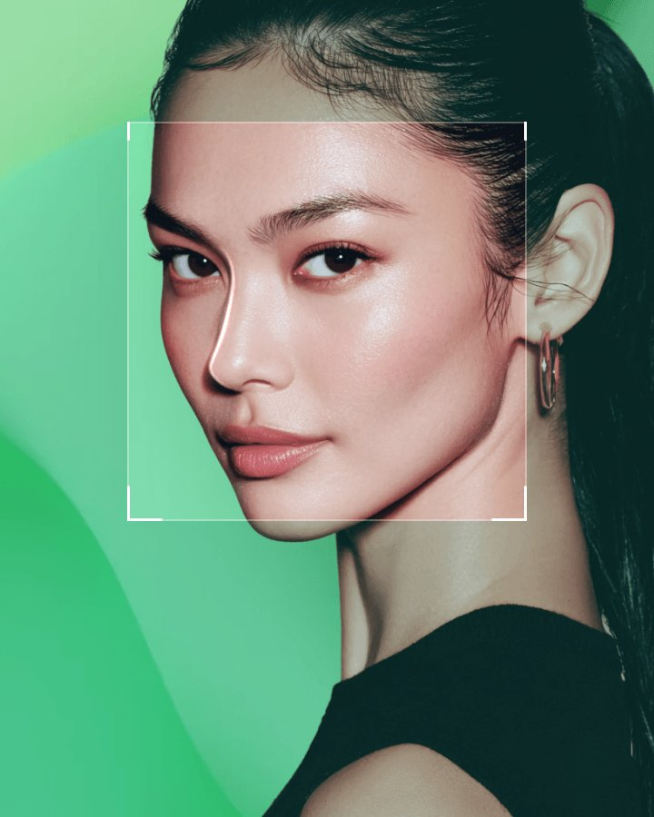
Nose design made for Asian facial structure
How Fanshi
Experts with over 20 years of experience in Asian rhinoplasty
Firmly fixing the nasal bridge and tip with Fanshi's own technique
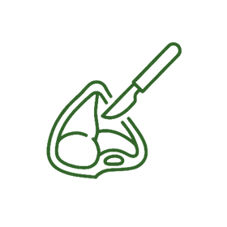
A proprietary rhinoplasty technique developed by Fanshi for Asian facial features
Natural and attractive results
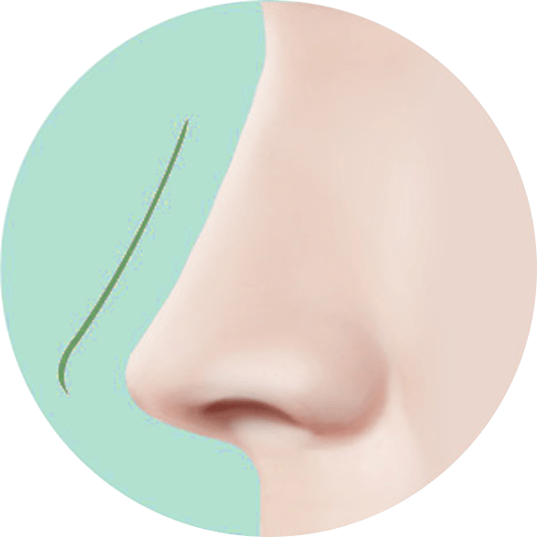
A tip suited to my face and facial contours
in harmony with the facial features
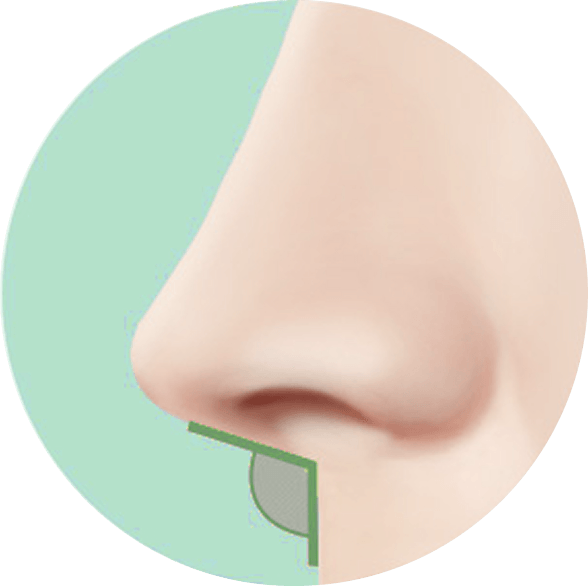
Creates an upright nasolabial angle
Creates a balanced nasolabial angle
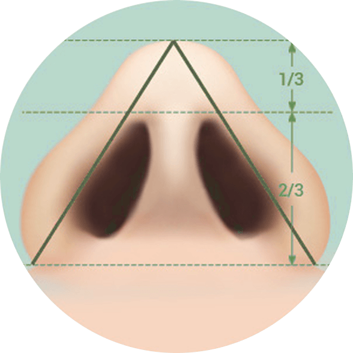
Alar length makes up 2/3 of the nose
At the core of Fanshi Asian rhinoplasty is designing the nose around your facial shape.
We place a nasal implant and use ear or septal cartilage to shape and elevate the tip to match the overall facial shape.
Key Point 1
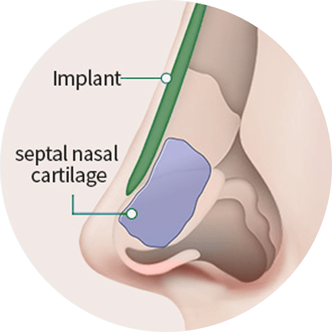
The tip is secured and an implant is placed to elevate the nose.
Autologous cartilage or donated dermis is then used for refinement.
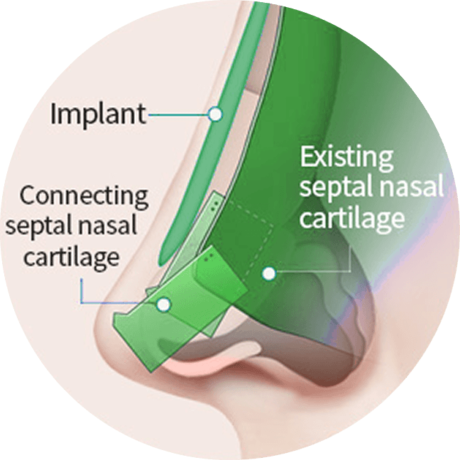
Septal cartilage is sutured in three layers to adjust nasal length and firmly secure the tip. Once secured, an implant is placed to elevate the nose, and finally autologous cartilage or donated dermis is used to refine the tip.
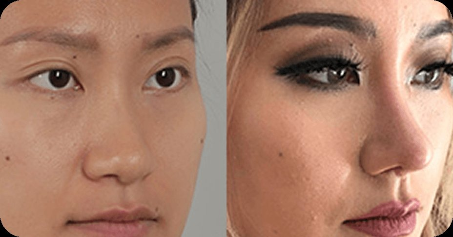
The nose can be lengthened to match Asian facial proportions
Tip height is adjustable and can be raised for a more defined result
Thanks to strong support, the nasolabial angle remains stable over the years
Key Point 2
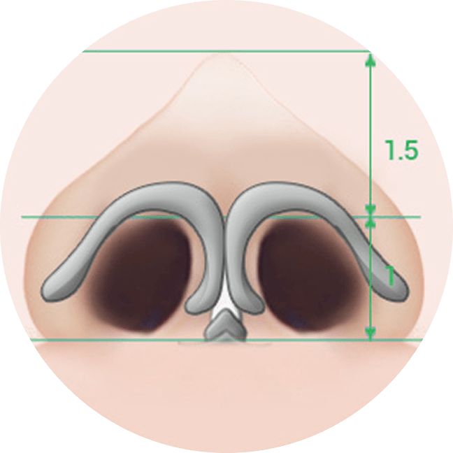
The tip is raised with an implant without considering overall proportions.
The result looks unnatural.
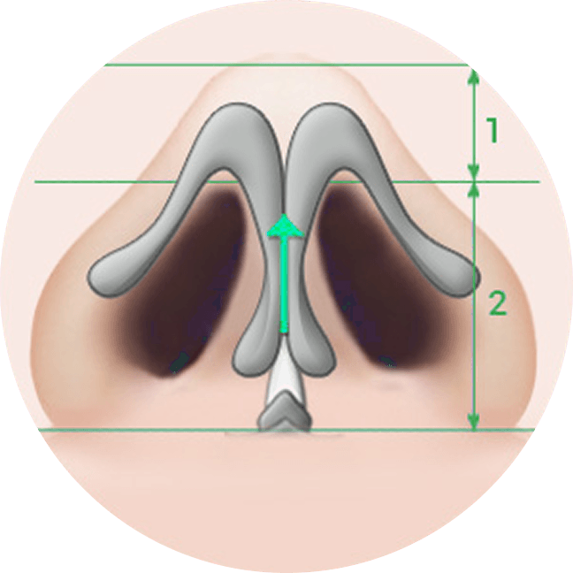
During surgery, the cartilage covering the ala is aligned with the overall proportions
Taking overall proportions into account (nostril:alar = 1:2) to create a perfect tip.
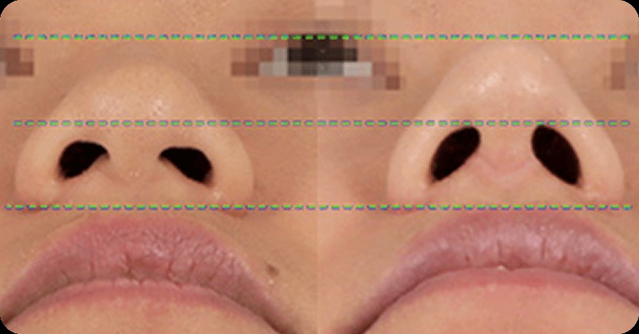
Refines a bulbous tip
For a naturally captivating, perfect tip


I want a high, striking bridge!
Should I choose a thick, tall implant?
Asian skin is thicker, but the cartilage and bone that make up the nose are relatively small and thin. It is therefore important not to place an implant that is too high or too large, as over time these can damage your nose and its supporting structures. The alar cartilage is also usually small and fragile, especially when the medial crura of the nasal cartilage are underdeveloped.
The goal of the Fanshi rhinoplasty team is to create a naturally beautiful tip for Asian patients. The appropriate height and tip length are determined by the size and thickness of each patient's cartilage. Drawing on years of experience and research, the Fanshi rhinoplasty team is committed to delivering satisfactory results through precise diagnosis and planning.


Area check · Remove nasal packing


Area check · Remove stitches and nasal splint


Major swelling subsides · Makeup allowed · Return to normal daily activities
Recovery is the real beginning — professional post-op care


No posts yet
Plastic surgery and ENT specialists work side by side, delivering results that are both beautiful and functional.


Recognized by authoritative medical accreditation bodies, with a complete system safeguarding every treatment

Plastic surgery and ENT specialists collaborate so functional improvement and aesthetics come together.

We start from the root cause, offering practical answers to a wide range of aesthetic concerns

Board-certified specialists across every field, with patient needs always first